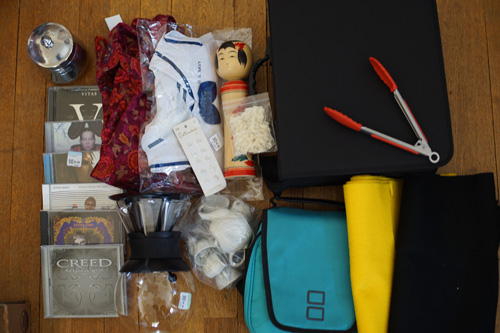
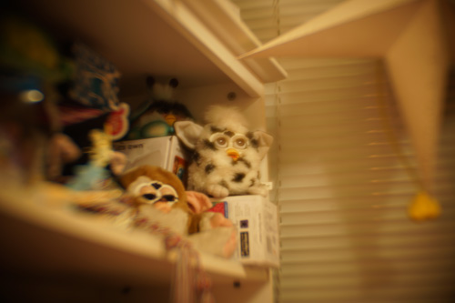
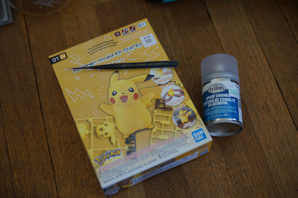
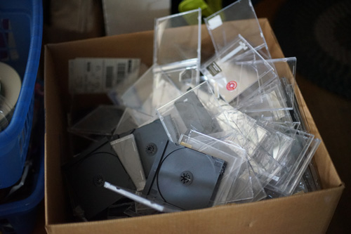

ive listened to a lot more news in the last few days than i have in months. gross and yucky. i love being out of touch its my favorite.
my mom watches TV all day switching between a crafting focused QVC channel and the news and bleh. bleh!!!! i worked so hard to be lost and confused but its all ruined now
i got to go to some thrift stores with my mom!!! it was a ton of fun and we even went out of town
ryan drinks his favorite tea in wholesale amounts and I keep having to refill the jar on the tea rack!!
i wasnt sure if i could pull this print off but the quality is so nice. all the seams are hidden and the cotton is so soft!!
i am like too excited to put this on my build-a-bear pikachu
i swear ive bought like 5 pourover things for ryan and ive never seen him try it.
i just put all my CDs in my current case and now it's overfilled. just in time!
makoto has good things to say about this brand and now its my turn to judge
hopefully these wont look too out of scale on SD sized dolls
it's for ryan
this one has a hideous peacock feather print but the other one is so nice that i'm willing to work with this one.
cant really go wrong with one of these...
xit products do not seem to be quality so i dont suggest paying full price. these were all half off in the case since they had been sitting over a month so i gave them all a chance. the telephoto filter has some strange distortion which i think will be fun for not serious photos. i need to figure out some way to store these things better.
ill try to take a better photo showing the telephoto lens filter peculiarities but here's one to start!
this isnt a thrift store haul but i got some things i'm excited about at some craft stores.
i had lots of fun customizing my last pikachu kit and i want to do more. i was even happier to see that they were on 40% off since hobby lobby quit doing coupons.
i hope i will be able to achieve even thinner eyelashes with this bad boy. no promises.
im seriously considering getting an air compressor to get away from this stuff but i dont see a huge difference between it and MSC
i went to homegoods for the first time. i wasn't really too impressed. it just feels like a marshall's without clothes and im honestly not a big marshalls fan. you really have to check all the seams on everything you buy there. I got a robe once that had a gaping hole in the side seam and a $90 heavy coat that grew a hole in the side the next year. I repaired (or tried) them both but i just have a sour taste in my mouth every time i think of those items.
i went through all my CDs and removed the paperwork from them and tossed the jewel cases. i really had no idea how much room these cases were taking up and its not even like theyre quality! jewel cases always break and are awful but are also easily replaceable so im not so worried about tossing them for my massive worthless CD collection
i was packing up my SD sized boys to bring back with me and i realized i only have 2 SD sized faceup protectors? wtf happened to the rest of them? did i hide them? surely i did not toss them but maybe they got left at a friends house. i need to order some more next time i do an order of anything. i also want to order some eye molds! ill probably go with clay instead of resin at first but it sounds fun to try
i wiped the faceup on my lusis the day after her birthday after my mom said she hated her faceup AND my friend said her beauty marks were cool. i guess if they were beauty marks and not smile lines i wouldn't have had an issue with that. i didnt get to seal it because of the weather and im excited to work on it again. feel free to be honest with my work though! constructive criticism is great.